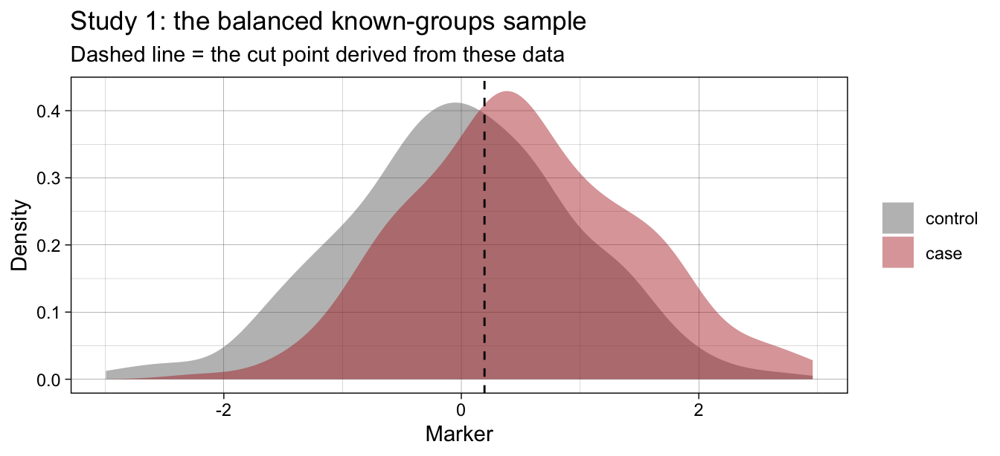
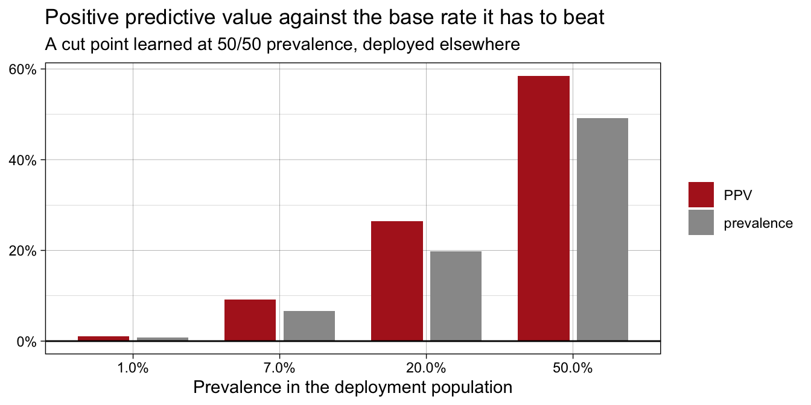
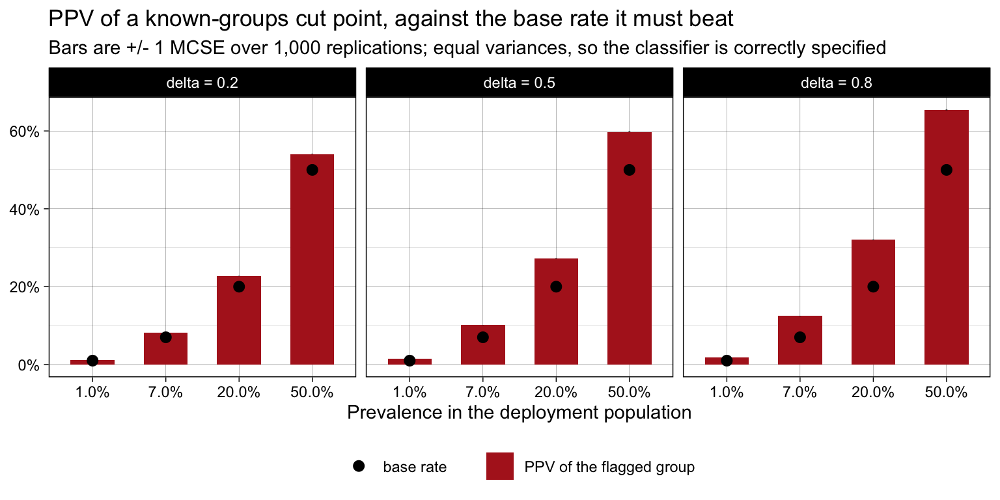
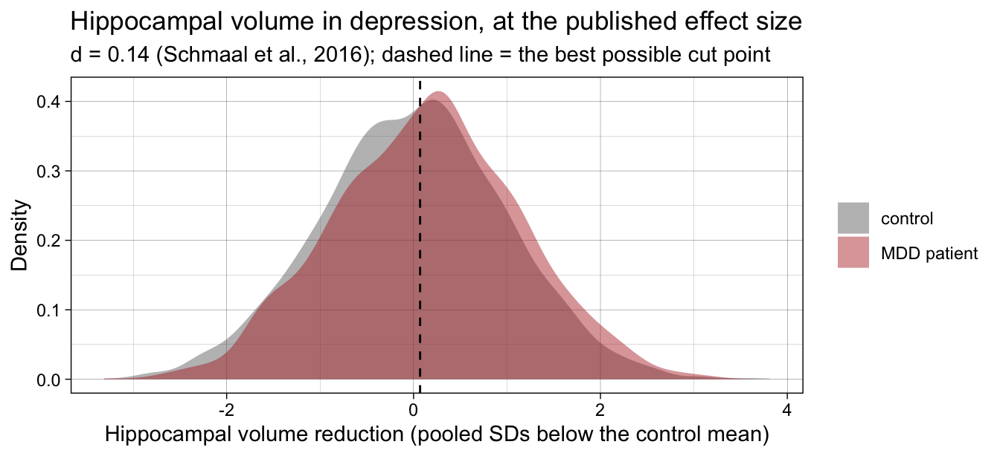
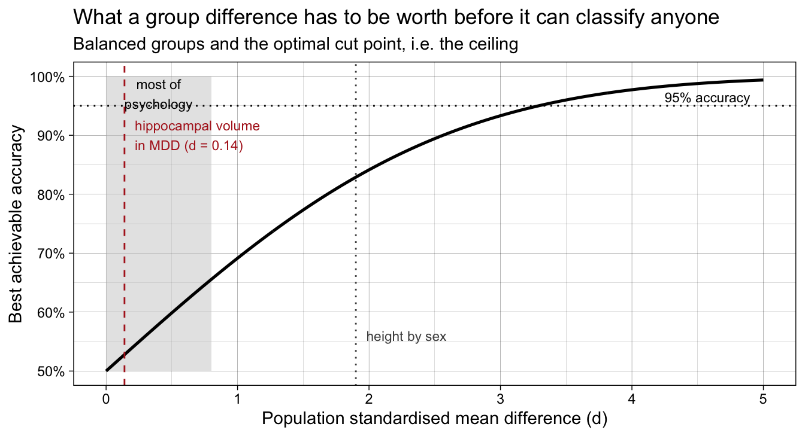
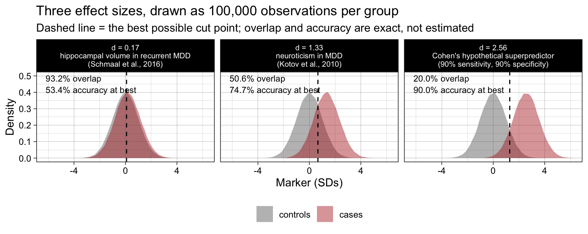

library(dplyr)
library(tidyr)
library(purrr)
library(ggplot2)
library(scales)
library(knitr)
library(kableExtra)
# Prevalence is used as a discrete axis in several plots. Formatting it as a percentage
# produces strings that sort alphabetically ("1.0%", "20.0%", "50.0%", "7.0%"), so the
# factor levels are set explicitly from the numeric values instead.
prevalence_label <- function(p) {
factor(percent(p, accuracy = 0.1),
levels = percent(sort(unique(p)), accuracy = 0.1))
}19 Known-groups differences do not transfer to prediction ✎ Polishing
What switching the estimand costs, and why AUC hides it
19.1 The claim
A very large literature is built on known-groups designs: recruit a group of cases and a group of controls, measure something, and report a standardised mean difference. The implicit promise is that a marker which separates the groups is a marker that could identify who has the condition.
This chapter simulates that promise and shows it is false under ordinary conditions. The argument has three steps.
- A known-groups study fixes the proportion of cases by design — usually at 50/50, because that is the most efficient way to estimate a mean difference. That decision destroys the information about how common the condition actually is.
- Prediction requires exactly that information. The mean difference identifies \(p(\text{marker} \mid \text{group})\); prediction needs \(p(\text{group} \mid \text{marker})\), and Bayes’ theorem says you cannot get from one to the other without the base rate.
- The damage becomes visible the moment the study produces a cut point, because a cut point is an implicit claim about the base rate. A cut point learned at 50/50 prevalence is calibrated for a world in which half the population has the condition.
The reason this is not already common knowledge is that known-groups studies almost always report their classification performance as an AUC, and AUC is mathematically incapable of showing the problem: it does not depend on prevalence at all.
Three examples follow. The first is simulated, so that the true effect size is known and the conditions can be varied. The second uses a real published effect size — the hippocampal volume difference between people with depression and controls, from a 15-site consortium study of nearly 9,000 brain scans — chosen because it is a robust, precisely estimated finding of exactly the kind that gets described as a step towards a biomarker. The third takes an instrument far better than anything that exists and applies it to suicide risk, where the base rate is low enough to defeat it regardless.
19.1.1 Design of the demonstration
Two studies are simulated in sequence, which is the structure of the real research pipeline being criticised.
- Study 1 — the known-groups study. Balanced recruitment:
n_per_groupcases andn_per_groupcontrols. Estimates Cohen’s d, the AUC, and — critically — a cut point chosen the way such papers choose one: the value that maximises the Youden index (sensitivity + specificity − 1) in the observed data. - Study 2 — the deployment. A fresh sample from a population in which the condition has prevalence \(\pi\). Study 1’s cut point is applied unchanged, and the operating characteristics that a user of the marker would actually experience are computed.
The only thing that changes between the two studies is who is in the sample. The marker, the condition, and the association between them are identical throughout.
19.2 Data-generating mechanism
A single continuous marker \(Y\), standardised so that controls have mean 0 and unit variance, and cases are shifted by the population effect size \(\delta\):
\[Y \mid \text{control} \sim \mathcal{N}(0, 1), \qquad Y \mid \text{case} \sim \mathcal{N}(\delta, 1)\]
Equal variances are used deliberately. Under equal-variance normals the log-odds of being a case is exactly linear in \(Y\), so logistic regression is correctly specified and no part of what follows can be blamed on a misspecified classifier. Everything below is the best case for the marker.
delta takes the conventional small / medium / large values 0.2, 0.5 and 0.8, and prevalence \(\pi\) takes the values 0.50 (a balanced sample), 0.20, 0.07 (roughly the 12-month prevalence of major depression) and 0.01 (roughly the prevalence of schizophrenia).
generate_known_groups_study <- function(n_per_group, delta) {
tibble(is_case = rep(c(FALSE, TRUE), each = n_per_group),
marker = rnorm(n = 2 * n_per_group, mean = delta * is_case, sd = 1))
}
generate_population_sample <- function(n_total, delta, prevalence) {
is_case <- rbinom(n = n_total, size = 1, prob = prevalence) == 1L
tibble(is_case = is_case,
marker = rnorm(n = n_total, mean = delta * is_case, sd = 1))
}19.3 Study 1: the known-groups study
The analysis below is what such a paper reports: an effect size, an AUC, and a cut point.
# AUC via the rank (Mann-Whitney) identity, so no extra package is needed
compute_auc <- function(marker, is_case) {
r <- rank(marker)
n1 <- sum(is_case); n0 <- sum(!is_case)
(sum(r[is_case]) - n1 * (n1 + 1) / 2) / (n1 * n0)
}
# The cut point a known-groups paper derives: the observed value that maximises the Youden
# index. Because the study sample is balanced, this is also the cut point that maximises
# accuracy *in that sample* - which is the whole problem, since the sample's 50/50 split is
# an artefact of recruitment rather than a fact about the world.
derive_youden_cut <- function(marker, is_case) {
# Sensitivity and specificity at every candidate cut, from counts at each distinct value.
# Identical to searching every observed value one at a time (verified), but linear rather
# than quadratic, which matters at 24,000 iterations. Working from distinct values rather
# than from sorted observations is what makes it correct when the marker has ties, as
# measured heights recorded to 0.1 cm do.
values <- sort(unique(marker))
n1 <- sum(is_case)
n0 <- length(marker) - n1
index <- match(marker, values)
cases_at <- tabulate(index[is_case], nbins = length(values))
controls_at <- tabulate(index[!is_case], nbins = length(values))
sensitivity <- rev(cumsum(rev(cases_at))) / n1 # P(marker >= value | case)
specificity <- (cumsum(controls_at) - controls_at) / n0 # P(marker < value | control)
values[which.max(sensitivity + specificity - 1)]
}
analyse_known_groups_study <- function(data) {
y1 <- data$marker[data$is_case]
y0 <- data$marker[!data$is_case]
n1 <- length(y1); n0 <- length(y0)
s_pooled <- sqrt(((n1 - 1) * var(y1) + (n0 - 1) * var(y0)) / (n1 + n0 - 2))
tibble(cohens_d = (mean(y1) - mean(y0)) / s_pooled,
p_value = t.test(y1, y0, var.equal = TRUE)$p.value,
auc = compute_auc(data$marker, data$is_case),
cut = derive_youden_cut(data$marker, data$is_case))
}One study, at \(\delta = 0.5\) with 200 cases and 200 controls — a well-powered study by the standards of this literature:
set.seed(42)
study_1 <- generate_known_groups_study(n_per_group = 200, delta = 0.5)
study_1_results <- analyse_known_groups_study(study_1)
study_1_results |>
mutate(across(everything(), \(x) number(x, accuracy = 0.001))) |>
kable(caption = "What the known-groups paper reports") |>
kable_styling(full_width = FALSE)| cohens_d | p_value | auc | cut |
|---|---|---|---|
| 0.561 | 0.000 | 0.648 | 0.195 |
ggplot(study_1, aes(x = marker, fill = is_case)) +
geom_density(alpha = 0.45, colour = NA) +
geom_vline(xintercept = study_1_results$cut, linetype = "dashed") +
scale_fill_manual(name = NULL, values = c("FALSE" = "grey40", "TRUE" = "firebrick"),
labels = c("control", "case")) +
labs(x = "Marker", y = "Density",
title = "Study 1: the balanced known-groups sample",
subtitle = "Dashed line = the cut point derived from these data") +
theme_linedraw()
A significant difference, a “medium” effect size, and an AUC that would be described as fair. Nothing about this output warns the reader of what follows.
19.4 Study 2: applying that cut point in the world
The cut point derived above is now applied, unchanged, to fresh samples of 20,000 people drawn from populations with different prevalences. The marker and the effect size are identical. Only the composition of the sample differs.
apply_cut <- function(data, cut) {
flagged <- data$marker >= cut
tibble(prevalence = mean(data$is_case),
sensitivity = mean(flagged[data$is_case]),
specificity = mean(!flagged[!data$is_case]),
proportion_flagged = mean(flagged),
ppv = sum(flagged & data$is_case) / sum(flagged),
accuracy = mean(flagged == data$is_case),
accuracy_of_trivial_rule = mean(!data$is_case),
n_flagged_per_true_case = sum(flagged) / sum(flagged & data$is_case))
}
set.seed(123)
deployment <- map_dfr(c(0.50, 0.20, 0.07, 0.01), function(p) {
generate_population_sample(n_total = 20000, delta = 0.5, prevalence = p) |>
apply_cut(cut = study_1_results$cut) |>
mutate(target_prevalence = p, .before = everything())
})
deployment |>
arrange(target_prevalence) |>
mutate(across(everything(), \(x) number(x, accuracy = 0.001))) |>
kable(caption = "The same marker, the same cut point, four populations") |>
kable_styling(full_width = FALSE)| target_prevalence | prevalence | sensitivity | specificity | proportion_flagged | ppv | accuracy | accuracy_of_trivial_rule | n_flagged_per_true_case |
|---|---|---|---|---|---|---|---|---|
| 0.010 | 0.008 | 0.573 | 0.573 | 0.428 | 0.011 | 0.573 | 0.992 | 91.096 |
| 0.070 | 0.066 | 0.609 | 0.572 | 0.440 | 0.092 | 0.574 | 0.934 | 10.914 |
| 0.200 | 0.198 | 0.623 | 0.572 | 0.466 | 0.264 | 0.582 | 0.802 | 3.783 |
| 0.500 | 0.492 | 0.612 | 0.579 | 0.515 | 0.585 | 0.596 | 0.508 | 1.709 |
Sensitivity and specificity barely move. They are properties of the two conditional distributions, and those have not changed. Everything a decision-maker cares about collapses anyway. At 7% prevalence 44% of the entire population is flagged, and only 9.2% of those flagged are cases. The “trivial rule” column is the accuracy of a classifier that ignores the marker entirely and declares that nobody has the condition: at every prevalence below 0.5, the marker-based rule is substantially worse than doing nothing.
deployment |>
mutate(population = prevalence_label(target_prevalence)) |>
select(population, prevalence, PPV = ppv) |>
pivot_longer(c(prevalence, PPV)) |>
ggplot(aes(x = population, y = value, fill = name)) +
geom_col(position = position_dodge(width = 0.8), width = 0.7) +
geom_hline(yintercept = 0, colour = "black") +
scale_y_continuous(labels = percent) +
scale_fill_manual(name = NULL, values = c("prevalence" = "grey60", "PPV" = "firebrick")) +
labs(x = "Prevalence in the deployment population", y = NULL,
title = "Positive predictive value against the base rate it has to beat",
subtitle = "A cut point learned at 50/50 prevalence, deployed elsewhere") +
theme_linedraw()
The marker does carry information: PPV exceeds the base rate in every population. But the amount of information is what a “medium” effect size actually buys, which is a lift of about 1.4×, and lifting a 7% base rate to 9% is not a screening instrument.
19.5 The Monte Carlo study
The single run above could be a lucky or unlucky draw, and it uses one effect size and one study size. This section repeats the two-study pipeline across conditions.
To keep the two sources of variability separate, Study 2 is evaluated analytically given the cut point that Study 1 produced. Since the deployment population is normal with known parameters, sensitivity and specificity at any cut point are exact, and PPV follows from Bayes’ theorem. All the Monte Carlo variability below therefore comes from Study 1 — which is the correct attribution, because in reality the cut point is the estimated quantity and the population is fixed.
Three decision rules are compared:
known_groups— the cut point Study 1 derived, deployed unchanged. This is current practice.oracle— the cut point that knows the prevalence and maximises accuracy for it, \(c^{*} = \delta/2 + \log\!\big((1-\pi)/\pi\big)/\delta\). This is the best any threshold could possibly do, and it is included to show that the problem is not fixable by choosing the threshold more carefully.trivial— ignore the marker and classify everyone as a non-case.
operating_characteristics <- function(cut, delta, prevalence) {
sensitivity <- pnorm(cut, mean = delta, lower.tail = FALSE)
specificity <- pnorm(cut)
flagged <- sensitivity * prevalence + (1 - specificity) * (1 - prevalence)
tibble(sensitivity = sensitivity,
specificity = specificity,
proportion_flagged = flagged,
ppv = sensitivity * prevalence / flagged,
accuracy = prevalence * sensitivity + (1 - prevalence) * specificity)
}
run_one_iteration <- function(n_per_group, delta, prevalence) {
study_1 <- analyse_known_groups_study(generate_known_groups_study(n_per_group, delta))
oracle_cut <- delta / 2 + log((1 - prevalence) / prevalence) / delta
bind_rows(
operating_characteristics(study_1$cut, delta, prevalence) |> mutate(rule = "known_groups"),
operating_characteristics(oracle_cut, delta, prevalence) |> mutate(rule = "oracle")
) |>
mutate(cohens_d = study_1$cohens_d,
auc = study_1$auc,
cut_used = c(study_1$cut, oracle_cut),
accuracy_of_trivial_rule = 1 - prevalence)
}
experiment_grid <- expand_grid(
n_per_group = c(50, 200),
delta = c(0.2, 0.5, 0.8),
prevalence = c(0.50, 0.20, 0.07, 0.01),
iteration = 1:1000
)dir.create("results", showWarnings = FALSE)
cache <- "results/simulation_known_groups_estimand_switch.rds"
if (file.exists(cache)) {
simulation <- readr::read_rds(cache)
} else {
set.seed(2026)
simulation <- experiment_grid |>
mutate(results = pmap(list(n_per_group = n_per_group,
delta = delta,
prevalence = prevalence),
run_one_iteration,
.progress = TRUE)) |>
unnest(results)
readr::write_rds(simulation, cache, compress = "gz")
}
simulation_summary <- simulation |>
group_by(n_per_group, delta, prevalence, rule) |>
summarise(across(c(cohens_d, auc, cut_used, sensitivity, specificity,
proportion_flagged, ppv, accuracy, accuracy_of_trivial_rule),
list(mean = mean, mcse = \(x) sd(x) / sqrt(length(x)))),
.groups = "drop") |>
mutate(accuracy_penalty = accuracy_mean - accuracy_of_trivial_rule_mean)19.5.1 Does Study 1 recover what it set out to estimate?
Before criticising the second step it is worth confirming that the first step works. It does: the known-groups study is an unbiased and well-behaved estimator of the thing it estimates.
simulation_summary |>
filter(rule == "known_groups", prevalence == 0.50) |>
transmute(`n per group` = n_per_group,
`true d` = delta,
`estimated d (MCSE)` = paste0(number(cohens_d_mean, accuracy = 0.001), " (",
number(cohens_d_mcse, accuracy = 0.0001), ")"),
`AUC (MCSE)` = paste0(number(auc_mean, accuracy = 0.001), " (",
number(auc_mcse, accuracy = 0.0001), ")"),
`AUC, closed form` = number(pnorm(delta / sqrt(2)), accuracy = 0.001)) |>
kable(caption = "Study 1 estimates its own estimand correctly") |>
kable_styling(full_width = FALSE)| n per group | true d | estimated d (MCSE) | AUC (MCSE) | AUC, closed form |
|---|---|---|---|---|
| 50 | 0.2 | 0.196 (0.0064) | 0.554 (0.0018) | 0.556 |
| 50 | 0.5 | 0.487 (0.0064) | 0.633 (0.0017) | 0.638 |
| 50 | 0.8 | 0.812 (0.0065) | 0.716 (0.0016) | 0.714 |
| 200 | 0.2 | 0.196 (0.0032) | 0.555 (0.0009) | 0.556 |
| 200 | 0.5 | 0.502 (0.0032) | 0.639 (0.0009) | 0.638 |
| 200 | 0.8 | 0.807 (0.0033) | 0.715 (0.0008) | 0.714 |
The problem is not that the known-groups study is biased or underpowered. It is that the quantity it estimates well is not the quantity anyone wants.
19.5.2 What the derived cut point does in the world
simulation_summary |>
filter(rule == "known_groups", n_per_group == 200) |>
# compute the lift before `prevalence` is overwritten with its formatted version
mutate(lift = ppv_mean / prevalence) |>
transmute(`true d` = delta,
prevalence = percent(prevalence, accuracy = 0.1),
`sens` = number(sensitivity_mean, accuracy = 0.001),
`spec` = number(specificity_mean, accuracy = 0.001),
`% flagged` = percent(proportion_flagged_mean, accuracy = 0.1),
`PPV (MCSE)` = paste0(number(ppv_mean, accuracy = 0.001), " (",
number(ppv_mcse, accuracy = 0.0001), ")"),
`lift over base rate` = paste0(number(lift, accuracy = 0.01), "x"),
`accuracy` = number(accuracy_mean, accuracy = 0.001),
`vs. flagging nobody` = number(accuracy_penalty, accuracy = 0.001)) |>
kable(caption = "The known-groups cut point deployed at each prevalence (Study 1 n = 200 per group)") |>
kable_styling(full_width = FALSE)| true d | prevalence | sens | spec | % flagged | PPV (MCSE) | lift over base rate | accuracy | vs. flagging nobody |
|---|---|---|---|---|---|---|---|---|
| 0.2 | 1.0% | 0.544 | 0.527 | 47.4% | 0.012 (0.0000) | 1.18x | 0.527 | -0.463 |
| 0.2 | 7.0% | 0.541 | 0.530 | 47.5% | 0.082 (0.0002) | 1.17x | 0.530 | -0.400 |
| 0.2 | 20.0% | 0.545 | 0.525 | 48.9% | 0.227 (0.0004) | 1.14x | 0.529 | -0.271 |
| 0.2 | 50.0% | 0.544 | 0.525 | 50.9% | 0.541 (0.0005) | 1.08x | 0.535 | 0.035 |
| 0.5 | 1.0% | 0.604 | 0.583 | 41.9% | 0.015 (0.0000) | 1.49x | 0.584 | -0.406 |
| 0.5 | 7.0% | 0.600 | 0.589 | 42.5% | 0.101 (0.0003) | 1.45x | 0.589 | -0.341 |
| 0.5 | 20.0% | 0.599 | 0.589 | 44.9% | 0.272 (0.0007) | 1.36x | 0.591 | -0.209 |
| 0.5 | 50.0% | 0.605 | 0.583 | 51.1% | 0.598 (0.0008) | 1.20x | 0.594 | 0.094 |
| 0.8 | 1.0% | 0.661 | 0.640 | 36.3% | 0.019 (0.0001) | 1.89x | 0.641 | -0.349 |
| 0.8 | 7.0% | 0.664 | 0.636 | 38.5% | 0.125 (0.0005) | 1.78x | 0.638 | -0.292 |
| 0.8 | 20.0% | 0.664 | 0.638 | 42.2% | 0.320 (0.0009) | 1.60x | 0.643 | -0.157 |
| 0.8 | 50.0% | 0.657 | 0.644 | 50.7% | 0.654 (0.0009) | 1.31x | 0.651 | 0.151 |
simulation_summary |>
filter(rule == "known_groups", n_per_group == 200) |>
mutate(effect = paste0("delta = ", delta)) |>
ggplot(aes(x = prevalence_label(prevalence))) +
geom_col(aes(y = ppv_mean, fill = "PPV of the flagged group"), width = 0.6) +
geom_point(aes(y = prevalence, colour = "base rate"), size = 2.5) +
geom_linerange(aes(ymin = ppv_mean - ppv_mcse, ymax = ppv_mean + ppv_mcse)) +
facet_wrap(~ effect) +
scale_y_continuous(labels = percent) +
scale_fill_manual(name = NULL, values = c("PPV of the flagged group" = "firebrick")) +
scale_colour_manual(name = NULL, values = c("base rate" = "black")) +
labs(x = "Prevalence in the deployment population", y = NULL,
title = "PPV of a known-groups cut point, against the base rate it must beat",
subtitle = "Bars are +/- 1 MCSE over 1,000 replications; equal variances, so the classifier is correctly specified") +
theme_linedraw() +
theme(legend.position = "bottom")
19.5.3 Is it just a badly chosen threshold?
No. The oracle rule below is handed the true effect size and the true prevalence and allowed to pick the accuracy-maximising threshold. It cannot rescue the marker; it mostly converges on refusing to use it.
simulation_summary |>
filter(n_per_group == 200) |>
select(delta, prevalence, rule, cut_used_mean, sensitivity_mean, ppv_mean,
accuracy_mean, accuracy_penalty) |>
pivot_wider(names_from = rule,
values_from = c(cut_used_mean, sensitivity_mean, ppv_mean,
accuracy_mean, accuracy_penalty)) |>
transmute(`true d` = delta,
prevalence = percent(prevalence, accuracy = 0.1),
`oracle cut` = number(cut_used_mean_oracle, accuracy = 0.01),
`oracle sens` = number(sensitivity_mean_oracle, accuracy = 0.0001),
`oracle PPV` = number(ppv_mean_oracle, accuracy = 0.001),
`oracle accuracy gain over flagging nobody` =
number(accuracy_penalty_oracle, accuracy = 0.0001),
`known-groups accuracy gain` =
number(accuracy_penalty_known_groups, accuracy = 0.0001)) |>
kable(caption = "Even an oracle threshold cannot make the marker useful") |>
kable_styling(full_width = FALSE)| true d | prevalence | oracle cut | oracle sens | oracle PPV | oracle accuracy gain over flagging nobody | known-groups accuracy gain |
|---|---|---|---|---|---|---|
| 0.2 | 1.0% | 23.08 | 0.0000 | 1.000 | 0.0000 | -0.4632 |
| 0.2 | 7.0% | 13.03 | 0.0000 | 1.000 | 0.0000 | -0.3995 |
| 0.2 | 20.0% | 7.03 | 0.0000 | 0.507 | 0.0000 | -0.2708 |
| 0.2 | 50.0% | 0.10 | 0.5398 | 0.540 | 0.0398 | 0.0348 |
| 0.5 | 1.0% | 9.44 | 0.0000 | 1.000 | 0.0000 | -0.4065 |
| 0.5 | 7.0% | 5.42 | 0.0000 | 0.523 | 0.0000 | -0.3406 |
| 0.5 | 20.0% | 3.02 | 0.0058 | 0.537 | 0.0002 | -0.2092 |
| 0.5 | 50.0% | 0.25 | 0.5987 | 0.599 | 0.0987 | 0.0939 |
| 0.8 | 1.0% | 6.14 | 0.0000 | 0.533 | 0.0000 | -0.3494 |
| 0.8 | 7.0% | 3.63 | 0.0023 | 0.553 | 0.0000 | -0.2918 |
| 0.8 | 20.0% | 2.13 | 0.0913 | 0.581 | 0.0051 | -0.1568 |
| 0.8 | 50.0% | 0.40 | 0.6554 | 0.655 | 0.1554 | 0.1508 |
(The oracle PPV column is degenerate wherever sensitivity has fallen to zero: almost nobody is flagged, so PPV is a ratio of two vanishing quantities. The accuracy column is the informative one there.)
At every prevalence below 0.5 the oracle threshold moves far into the tail, sensitivity falls to almost zero, and the accuracy gain over ignoring the marker entirely is between 0.0000 and about 0.005. The accuracy-optimal decision, given a d of 0.5 and a condition affecting 7% of people, is to classify everyone as a non-case. This is a property of the effect size, not of the threshold.
19.5.4 Study 1’s sample size does not help either
Doubling or quadrupling the known-groups study improves the precision of the cut point and leaves its location exactly as mis-calibrated:
simulation_summary |>
filter(rule == "known_groups", delta == 0.5) |>
arrange(prevalence, n_per_group) |>
transmute(`n per group` = n_per_group,
prevalence = percent(prevalence, accuracy = 0.1),
`cut point (MCSE)` = paste0(number(cut_used_mean, accuracy = 0.001), " (",
number(cut_used_mcse, accuracy = 0.0001), ")"),
`PPV` = number(ppv_mean, accuracy = 0.001),
`vs. flagging nobody` = number(accuracy_penalty, accuracy = 0.001)) |>
kable(caption = "More data in Study 1 sharpens the wrong cut point") |>
kable_styling(full_width = FALSE)| n per group | prevalence | cut point (MCSE) | PPV | vs. flagging nobody |
|---|---|---|---|---|
| 50 | 1.0% | 0.190 (0.0153) | 0.015 | -0.422 |
| 200 | 1.0% | 0.221 (0.0103) | 0.015 | -0.406 |
| 50 | 7.0% | 0.196 (0.0159) | 0.102 | -0.357 |
| 200 | 7.0% | 0.235 (0.0100) | 0.101 | -0.341 |
| 50 | 20.0% | 0.213 (0.0153) | 0.273 | -0.218 |
| 200 | 20.0% | 0.237 (0.0105) | 0.272 | -0.209 |
| 50 | 50.0% | 0.192 (0.0157) | 0.597 | 0.088 |
| 200 | 50.0% | 0.220 (0.0103) | 0.598 | 0.094 |
This is the diagnostic signature of an estimand problem rather than a sampling problem: more data makes the answer more precise without making it more useful.
19.6 Why AUC hides all of this
simulation_summary |>
filter(rule == "known_groups", n_per_group == 200) |>
transmute(`true d` = delta,
prevalence = percent(prevalence, accuracy = 0.1),
`AUC` = number(auc_mean, accuracy = 0.001),
`PPV` = number(ppv_mean, accuracy = 0.001),
`accuracy vs. flagging nobody` = number(accuracy_penalty, accuracy = 0.001)) |>
kable(caption = "AUC is constant down each block; everything decision-relevant is not") |>
kable_styling(full_width = FALSE)| true d | prevalence | AUC | PPV | accuracy vs. flagging nobody |
|---|---|---|---|---|
| 0.2 | 1.0% | 0.557 | 0.012 | -0.463 |
| 0.2 | 7.0% | 0.555 | 0.082 | -0.400 |
| 0.2 | 20.0% | 0.558 | 0.227 | -0.271 |
| 0.2 | 50.0% | 0.555 | 0.541 | 0.035 |
| 0.5 | 1.0% | 0.639 | 0.015 | -0.406 |
| 0.5 | 7.0% | 0.639 | 0.101 | -0.341 |
| 0.5 | 20.0% | 0.640 | 0.272 | -0.209 |
| 0.5 | 50.0% | 0.639 | 0.598 | 0.094 |
| 0.8 | 1.0% | 0.714 | 0.019 | -0.349 |
| 0.8 | 7.0% | 0.715 | 0.125 | -0.292 |
| 0.8 | 20.0% | 0.716 | 0.320 | -0.157 |
| 0.8 | 50.0% | 0.715 | 0.654 | 0.151 |
AUC is the probability that a randomly chosen case scores above a randomly chosen control. That definition conditions on one case and one control, which silently imposes a 50/50 composition — the same composition the known-groups design imposed. AUC therefore reports the known-groups study back to itself. It is prevalence-invariant, and here it is \(\Phi(\delta/\sqrt{2})\) regardless of the population the marker is used in.
A paper can honestly report AUC = 0.71 for a marker with a large effect (d = 0.8) that, deployed at 7% prevalence, flags 38% of the population and is 29 percentage points less accurate than a rule that ignores it. Both numbers describe the same marker. Only one of them describes a decision.
19.7 A worked example with a real published effect
Everything above is simulated, which invites the objection that the effect sizes were chosen to make the point. This section takes an effect size that was not chosen by anyone arguing about methodology: the difference in hippocampal volume between people with major depressive disorder and controls, as estimated by the ENIGMA Major Depressive Disorder working group (Schmaal et al., 2016).
That paper pooled structural MRI from 1,728 patients and 7,199 controls across 15 samples worldwide. Patients had significantly lower hippocampal volume, Cohen’s d = −0.14, a difference of 1.24% of the structure’s volume. The effect was carried by patients with recurrent depression (d = −0.17); first-episode patients did not differ from controls.
It is worth being clear about what kind of finding this is, because the argument here is not that it is wrong. With nearly 9,000 scans and a consortium built specifically to produce estimates that replicate, this is about as solid as a case-control neuroimaging result gets. The question is not whether the difference is real. It is what a real difference of that size can be used for — and the answer turns out not to depend on the sample size at all.
# The published estimate, fixed to the paper. Individual-level scans are not public, so the
# data below are *constructed* to be consistent with the reported summary statistics rather
# than estimated from them: the effect size and the two group sizes are Schmaal et al.'s.
# Each group is standardised and the patient group is then shifted by d, so the realised
# effect size in these data is exactly the published one and none of what follows depends
# on a lucky or unlucky draw.
schmaal_d <- 0.14 # magnitude; patients are LOWER, see the sign convention below
schmaal_n_cases <- 1728
schmaal_n_ctrls <- 7199
# The marker is oriented as *hippocampal volume reduction* relative to the control mean, in
# pooled SD units, so that larger values indicate the patient direction and all of the
# machinery above applies unchanged.
set.seed(2016)
enigma <- bind_rows(
tibble(is_case = TRUE, marker = rnorm(schmaal_n_cases)),
tibble(is_case = FALSE, marker = rnorm(schmaal_n_ctrls))
) |>
group_by(is_case) |>
mutate(marker = (marker - mean(marker)) / sd(marker)) |>
ungroup() |>
mutate(marker = marker + is_case * schmaal_d)
enigma_study <- analyse_known_groups_study(enigma)
tibble(`published d` = schmaal_d,
`realised d in these data` = enigma_study$cohens_d,
`AUC` = pnorm(schmaal_d / sqrt(2)),
`distribution overlap` = 2 * pnorm(-schmaal_d / 2),
`patients below the control mean` = pnorm(schmaal_d)) |>
mutate(across(everything(), \(x) number(x, accuracy = 0.001))) |>
kable(caption = "The ENIGMA hippocampal finding, expressed as a classification problem") |>
kable_styling(full_width = FALSE)| published d | realised d in these data | AUC | distribution overlap | patients below the control mean |
|---|---|---|---|---|
| 0.140 | 0.140 | 0.539 | 0.944 | 0.556 |
The two distributions overlap by 94%. Fifty-six percent of patients fall below the control mean, against fifty percent of controls: that six-point difference in a proportion is the finding.
ggplot(enigma, aes(x = marker, fill = is_case)) +
geom_density(alpha = 0.45, colour = NA) +
geom_vline(xintercept = schmaal_d / 2, linetype = "dashed") +
scale_fill_manual(name = NULL, values = c("FALSE" = "grey40", "TRUE" = "firebrick"),
labels = c("control", "MDD patient")) +
labs(x = "Hippocampal volume reduction (pooled SDs below the control mean)", y = "Density",
title = "Hippocampal volume in depression, at the published effect size",
subtitle = "d = 0.14 (Schmaal et al., 2016); dashed line = the best possible cut point") +
theme_linedraw()
19.7.1 What the best possible cut point achieves
The classifier below is handed the theoretically optimal threshold, \(d/2\), rather than one estimated from data. That is more generous than any real study could be — the next section shows what happens when the threshold has to be estimated — and it is evaluated on the same data it was built for, with no held-out sample.
optimal_cut <- schmaal_d / 2
enigma_classified <- enigma |>
mutate(flagged = marker >= optimal_cut)
table(predicted = if_else(enigma_classified$flagged, "MDD", "control"),
actual = if_else(enigma_classified$is_case, "MDD", "control")) |>
kable(caption = "Confusion matrix: predicting depression from hippocampal volume") |>
kable_styling(full_width = FALSE)| MDD | control | |
|---|---|---|
| MDD | 928 | 3457 |
| control | 800 | 3742 |
tibble(`sensitivity` = mean(enigma_classified$flagged[enigma_classified$is_case]),
`specificity` = mean(!enigma_classified$flagged[!enigma_classified$is_case]),
`best achievable accuracy, balanced groups` = pnorm(schmaal_d / 2),
`error rate` = 1 - pnorm(schmaal_d / 2),
`accuracy of tossing a coin` = 0.5) |>
mutate(across(everything(), \(x) number(x, accuracy = 0.0001))) |>
kable(caption = "Classification performance at the best possible cut point") |>
kable_styling(full_width = FALSE)| sensitivity | specificity | best achievable accuracy, balanced groups | error rate | accuracy of tossing a coin |
|---|---|---|---|---|
| 0.5370 | 0.5198 | 0.5279 | 0.4721 | 0.5000 |
The ceiling is \(\Phi(d/2)\) = 52.8%. A rule built from the largest and most carefully constructed study of its kind, given the optimal threshold for free and evaluated on its own data in a balanced sample, beats a coin toss by under three percentage points.
Expressed in the paper’s own units, the arithmetic is unkind. A d of 0.14 corresponds to 1.24% of hippocampal volume, so one pooled SD is about 8.9% of the structure. The optimal cut sits half an effect size below the control mean — roughly 0.6% of hippocampal volume — and a rule that flags everyone below it flags close to half of everybody who walks through the door.
19.7.2 At this effect size the cut point is barely identified
The threshold above was given, not learned. A real study has to estimate it, and when the two distributions overlap by 94% the Youden index is nearly flat, so its maximiser is close to arbitrary. Repeating the ENIGMA-sized study 500 times shows how little the data pin it down:
cut_point_stability <- function(d, n_cases, n_controls, replications = 500) {
cuts <- replicate(replications, {
study <- tibble(is_case = rep(c(TRUE, FALSE), c(n_cases, n_controls)),
marker = rnorm(n_cases + n_controls) + rep(c(d, 0), c(n_cases, n_controls)))
derive_youden_cut(study$marker, study$is_case)
})
tibble(d = d,
`optimal cut` = d / 2,
`mean derived cut` = mean(cuts),
`SD of the derived cut` = sd(cuts),
`95% of derived cuts fall in` = paste0(number(quantile(cuts, 0.025), accuracy = 0.01),
" to ",
number(quantile(cuts, 0.975), accuracy = 0.01)))
}
set.seed(1)
bind_rows(
cut_point_stability(schmaal_d, schmaal_n_cases, schmaal_n_ctrls),
cut_point_stability(1.9, schmaal_n_cases, schmaal_n_ctrls)
) |>
mutate(across(where(is.numeric), \(x) number(x, accuracy = 0.001)),
`what this is` = c("hippocampal volume in MDD", "for contrast: height by sex")) |>
kable(caption = "How well the same 8,927 scans pin down the cut point, at two effect sizes") |>
kable_styling(full_width = FALSE)| d | optimal cut | mean derived cut | SD of the derived cut | 95% of derived cuts fall in | what this is |
|---|---|---|---|---|---|
| 0.140 | 0.070 | 0.051 | 0.323 | -0.60 to 0.69 | hippocampal volume in MDD |
| 1.900 | 0.950 | 0.952 | 0.072 | 0.81 to 1.09 | for contrast: height by sex |
At d = 0.14 the standard deviation of the derived cut point is about four and a half times the quantity it is estimating, and 95% of studies would land somewhere between 0.6 SD below the control mean and 0.7 SD above it. At d = 1.9 the same sample size pins the cut down to within a few per cent. Nine thousand scans are not enough to locate a threshold when there is no threshold to locate — which is a second, independent reason why a cut point from a study like this should not be transported anywhere.
19.7.3 Deploying it where depression is not half the population
enigma_deployment <- map_dfr(
c(0.50, 0.20, 0.07, 0.02),
\(p) operating_characteristics(schmaal_d / 2, schmaal_d, p) |> mutate(prevalence = p))
enigma_deployment |>
transmute(`prevalence of MDD` = percent(prevalence, accuracy = 0.1),
`% flagged` = percent(proportion_flagged, accuracy = 0.1),
`PPV` = percent(ppv, accuracy = 0.1),
`lift over the base rate` = paste0(number(ppv / prevalence, accuracy = 0.001), "x"),
`wrong among those flagged` = percent(1 - ppv, accuracy = 0.1)) |>
kable(caption = "The hippocampal cut point applied at realistic prevalences") |>
kable_styling(full_width = FALSE)| prevalence of MDD | % flagged | PPV | lift over the base rate | wrong among those flagged |
|---|---|---|---|---|
| 50.0% | 50.0% | 52.8% | 1.056x | 47.2% |
| 20.0% | 48.3% | 21.8% | 1.092x | 78.2% |
| 7.0% | 47.6% | 7.8% | 1.109x | 92.2% |
| 2.0% | 47.3% | 2.2% | 1.116x | 97.8% |
Roughly 7% is the 12-month prevalence of major depression and roughly 20% the lifetime prevalence, so the middle rows are the settings anyone would actually be screening in. The lift over simply guessing the base rate is between 1.06× and 1.12× throughout.
Put in counts, screening 10,000 people in a population with 7% prevalence:
screening_n <- 10000
p_screen <- 0.07
oc <- operating_characteristics(schmaal_d / 2, schmaal_d, p_screen)
tibble(`people screened` = screening_n,
`people with MDD among them` = screening_n * p_screen,
`people flagged` = screening_n * oc$proportion_flagged,
`of whom actually have MDD` = screening_n * p_screen * oc$sensitivity,
`false positives` = screening_n * (1 - p_screen) * (1 - oc$specificity),
`cases missed` = screening_n * p_screen * (1 - oc$sensitivity)) |>
mutate(across(everything(), \(x) number(x, accuracy = 1, big.mark = ","))) |>
kable(caption = "Screening 10,000 people on hippocampal volume") |>
kable_styling(full_width = FALSE)| people screened | people with MDD among them | people flagged | of whom actually have MDD | false positives | cases missed |
|---|---|---|---|---|---|
| 10,000 | 700 | 4,760 | 370 | 4,391 | 330 |
Nearly 4,400 people are told they may be depressed when they are not, in order to correctly flag 370 of the 700 who are — while 330 cases are missed. And this is not a threshold that was chosen badly. The accuracy-maximising threshold at 7% prevalence sits 18.5 SD below the control mean, flags nobody at all, and improves on ignoring the scan entirely by 0.000000.
19.7.4 How large would the difference have to be?
Because accuracy at the optimal cut in a balanced sample is \(\Phi(d/2)\), the question inverts cleanly. This is the single most useful table here for reading a case-control literature:
bind_rows(
tibble(d = schmaal_d,
label = "hippocampal volume in MDD (Schmaal et al., 2016)"),
tibble(d = c(0.2, 0.5, 0.8),
label = c("Cohen's small", "Cohen's medium", "Cohen's large")),
tibble(d = 1.9,
label = "adult height by sex, about the largest human group difference there is"),
tibble(d = 2 * qnorm(c(0.90, 0.95, 0.99)),
label = paste0("what to require before claiming ", percent(c(0.90, 0.95, 0.99)),
" accuracy"))
) |>
transmute(`Cohen's d` = number(d, accuracy = 0.01),
`AUC` = number(pnorm(d / sqrt(2)), accuracy = 0.001),
`best possible accuracy` = percent(pnorm(d / 2), accuracy = 0.1),
`error rate` = percent(1 - pnorm(d / 2), accuracy = 0.1),
`what this is` = label) |>
kable(caption = "Accuracy is a function of d alone (balanced groups, optimal cut point)") |>
kable_styling(full_width = FALSE)| Cohen's d | AUC | best possible accuracy | error rate | what this is |
|---|---|---|---|---|
| 0.14 | 0.539 | 52.8% | 47.2% | hippocampal volume in MDD (Schmaal et al., 2016) |
| 0.20 | 0.556 | 54.0% | 46.0% | Cohen's small |
| 0.50 | 0.638 | 59.9% | 40.1% | Cohen's medium |
| 0.80 | 0.714 | 65.5% | 34.5% | Cohen's large |
| 1.90 | 0.910 | 82.9% | 17.1% | adult height by sex, about the largest human group difference there is |
| 2.56 | 0.965 | 90.0% | 10.0% | what to require before claiming 90% accuracy |
| 3.29 | 0.990 | 95.0% | 5.0% | what to require before claiming 95% accuracy |
| 4.65 | 0.999 | 99.0% | 1.0% | what to require before claiming 99% accuracy |
tibble(d = seq(0, 5, by = 0.01)) |>
mutate(accuracy = pnorm(d / 2)) |>
ggplot(aes(d, accuracy)) +
annotate("rect", xmin = 0, xmax = 0.8, ymin = 0.5, ymax = 1,
fill = "grey80", alpha = 0.5) +
annotate("text", x = 0.4, y = 0.97, label = "most of\npsychology", size = 3) +
geom_line(linewidth = 0.9) +
geom_vline(xintercept = schmaal_d, colour = "firebrick", linetype = "dashed") +
annotate("text", x = schmaal_d + 0.08, y = 0.90, hjust = 0, size = 3, colour = "firebrick",
label = "hippocampal volume\nin MDD (d = 0.14)") +
geom_vline(xintercept = 1.9, colour = "grey30", linetype = "dotted") +
annotate("text", x = 1.98, y = 0.56, hjust = 0, size = 3, colour = "grey30",
label = "height by sex") +
geom_hline(yintercept = 0.95, linetype = "dotted") +
annotate("text", x = 4.9, y = 0.965, label = "95% accuracy", size = 3, hjust = 1) +
scale_y_continuous(labels = percent, limits = c(0.5, 1)) +
labs(x = "Population standardised mean difference (d)",
y = "Best achievable accuracy",
title = "What a group difference has to be worth before it can classify anyone",
subtitle = "Balanced groups and the optimal cut point, i.e. the ceiling") +
theme_linedraw()
Reaching 95% accuracy requires d = 3.29 — twenty-three times the ENIGMA hippocampal effect, and still nearly twice the sex difference in adult height. There is nothing in the behavioural or brain sciences in that range.
19.7.5 The part that no amount of data fixes
The most important feature of this example is what the 8,927 scans bought. They bought precision: the ENIGMA estimate of d is far tighter than any single-site study could manage, and that is exactly what the consortium was built to deliver. What they did not buy, and could not buy, is separation. The overlap between the two distributions is a property of d, and no sample size changes it.
This is the same diagnostic signature as the simulation above, where quadrupling Study 1 sharpened the cut point without moving it. Accumulating participants shrinks the error bars around an effect size; it does nothing to the classification ceiling that effect size implies. A finding can be simultaneously robust, replicable, precisely estimated, and useless for identifying anyone — and the literature’s habit of treating a significant group difference as a step toward a biomarker does not survive contact with \(\Phi(d/2)\).
19.8 A third example: when the base rate is small enough that nothing helps
The two examples so far fail for different reasons. The simulated marker fails because the effect size is small; the hippocampal finding fails for the same reason, more starkly. This last example fails even when the effect size is enormous, because the event being predicted is rare enough that the arithmetic cannot be rescued by any instrument.
The argument is Jacob Cohen’s, from a 1986 paper on suicide risk factor analysis, and it is worth noting that it is this chapter’s argument, made forty years ago and directed at a literature that has continued largely unaffected.
19.8.1 Cohen’s superpredictor
Cohen asks the reader to imagine an instrument far better than anything in the literature: 90% sensitivity and 90% specificity, an odds ratio of 81. He then applies it in a population with a 1% rate — the rate he attributes to the most suicide-prone populations there are, past attempters and people with depression or schizophrenia, at “no greater than 1% or 2% per year”.
It is worth pausing on what 90% sensitivity and 90% specificity would mean as an effect size, because the rest of this section is easier to read once that is fixed in mind. At the optimal cut in a balanced sample, accuracy is \(\Phi(d/2)\), so 90% requires d = 2.56. Two published effects give the scale:
- d = 0.17 — hippocampal volume in recurrent major depression, the larger of the two figures from Schmaal et al. (2016) used in the previous section.
- d = 1.33 — neuroticism in major depression, from Kotov et al.’s (2010) meta-analysis of 63 studies, 14,653 patients and 60,576 controls. This is about as large and as well-evidenced as group differences in psychology get, and it is the same diagnostic contrast as the hippocampal finding, measured with a questionnaire instead of a scanner.
# Drawn as very large samples rather than as plotted densities, so that what is on screen is
# a picture of data rather than of an assumption.
set.seed(1986)
n_illustration <- 100000
comparison_effects <- tribble(
~d, ~label,
0.17, "d = 0.17\nhippocampal volume in recurrent MDD\n(Schmaal et al., 2016)",
1.33, "d = 1.33\nneuroticism in MDD\n(Kotov et al., 2010)",
2 * qnorm(0.90), "d = 2.56\nCohen's hypothetical superpredictor\n(90% sensitivity, 90% specificity)"
)
overlap_data <- comparison_effects |>
rowwise() |>
reframe(label = factor(label, levels = comparison_effects$label),
is_case = rep(c(FALSE, TRUE), each = n_illustration),
marker = c(rnorm(n_illustration), rnorm(n_illustration, mean = d)))
comparison_effects |>
mutate(overlap = 2 * pnorm(-d / 2),
accuracy = pnorm(d / 2)) |>
ggplot() +
geom_density(data = overlap_data, aes(x = marker, fill = is_case),
alpha = 0.45, colour = NA) +
geom_vline(aes(xintercept = d / 2), linetype = "dashed") +
# placed hard left so the cut-point line never runs through the label in any panel
geom_text(aes(x = -6.2, y = 0.45,
label = paste0(percent(overlap, accuracy = 0.1), " overlap\n",
percent(accuracy, accuracy = 0.1), " accuracy at best")),
hjust = 0, size = 3, lineheight = 1.1) +
coord_cartesian(xlim = c(-6.3, 6.3)) +
facet_wrap(~ factor(label, levels = comparison_effects$label)) +
scale_fill_manual(name = NULL, values = c("FALSE" = "grey40", "TRUE" = "firebrick"),
labels = c("controls", "cases")) +
scale_y_continuous(limits = c(0, 0.5)) +
labs(x = "Marker (SDs)", y = "Density",
title = "Three effect sizes, drawn as 100,000 observations per group",
subtitle = "Dashed line = the best possible cut point; overlap and accuracy are exact, not estimated") +
theme_linedraw() +
theme(legend.position = "bottom", strip.text = element_text(size = 7.5))
Cohen’s superpredictor is not a slightly better version of anything in the literature. It separates the two groups four times as well as the largest personality difference in psychiatry and fifteen times as well as the ENIGMA hippocampal finding, and it still leaves 20% of the two distributions overlapping. Cohen himself cites 50% sensitivity with 90% specificity as a more attainable target, which is d = 1.28 — right alongside the neuroticism effect, and still an extraordinary result for a suicide risk factor.
# Cohen's (1986) worked example, reproduced. All quantities are exact given sensitivity,
# specificity and the base rate; nothing here is simulated.
predictive_values <- function(sensitivity, specificity, base_rate, n_screened = 10000) {
true_positives <- n_screened * base_rate * sensitivity
false_negatives <- n_screened * base_rate * (1 - sensitivity)
false_positives <- n_screened * (1 - base_rate) * (1 - specificity)
true_negatives <- n_screened * (1 - base_rate) * specificity
flagged <- true_positives + false_positives
tibble(base_rate, sensitivity, specificity, n_screened,
flagged, true_positives, false_positives, false_negatives, true_negatives,
ppv = true_positives / flagged)
}
# phi and kappa, the two validity coefficients Cohen reports, both of which depend on the
# base rate even though sensitivity and specificity do not
phi_coefficient <- function(sensitivity, specificity, base_rate) {
tp <- sensitivity * base_rate; fn <- (1 - sensitivity) * base_rate
fp <- (1 - specificity) * (1 - base_rate); tn <- specificity * (1 - base_rate)
(tp * tn - fp * fn) / sqrt((tp + fp) * (fn + tn) * (tp + fn) * (fp + tn))
}
cohens_kappa <- function(sensitivity, specificity, base_rate) {
tp <- sensitivity * base_rate; fn <- (1 - sensitivity) * base_rate
fp <- (1 - specificity) * (1 - base_rate); tn <- specificity * (1 - base_rate)
observed <- tp + tn
expected <- (tp + fp) * (tp + fn) + (fn + tn) * (fp + tn)
(observed - expected) / (1 - expected)
}
superpredictor <- predictive_values(sensitivity = 0.90, specificity = 0.90, base_rate = 0.01)
superpredictor |>
transmute(`screened` = n_screened,
`will attempt` = n_screened * base_rate,
`flagged` = flagged,
`flagged correctly` = true_positives,
`false positives` = false_positives,
`cases missed` = false_negatives,
`PPV` = percent(ppv, accuracy = 0.1),
`wrong among those flagged` = percent(1 - ppv, accuracy = 0.1)) |>
mutate(across(where(is.numeric), \(x) number(x, accuracy = 1, big.mark = ","))) |>
kable(caption = "Cohen's 90%/90% superpredictor applied at a 1% base rate") |>
kable_styling(full_width = FALSE)| screened | will attempt | flagged | flagged correctly | false positives | cases missed | PPV | wrong among those flagged |
|---|---|---|---|---|---|---|---|
| 10,000 | 100 | 1,080 | 90 | 990 | 10 | 8.3% | 91.7% |
tibble(`odds ratio` = (0.9 / 0.1) / (0.1 / 0.9),
`phi` = phi_coefficient(0.9, 0.9, 0.01),
`kappa` = cohens_kappa(0.9, 0.9, 0.01)) |>
mutate(across(everything(), \(x) number(x, accuracy = 0.001))) |>
kable(caption = "The same instrument expressed as validity coefficients") |>
kable_styling(full_width = FALSE)| odds ratio | phi | kappa |
|---|---|---|
| 81.000 | 0.256 | 0.137 |
These reproduce Cohen’s published figures exactly: 1,080 flagged of whom 990 are false positives, a predictive value of 8%, an odds ratio of 81, phi of 0.256 and kappa of 0.137. He notes drily that this “modest degree of association is statistically significant in a sample as few as 60 cases”.
19.8.2 The same arithmetic with effect sizes that actually exist
Cohen’s instrument was hypothetical. The two published effects introduced at the top of this section can be put through the identical calculation, using the best cut point each of them allows — which sets sensitivity and specificity both equal to \(\Phi(d/2)\).
balanced_operating_point <- function(d) pnorm(d / 2)
real_effect_sizes <- tribble(
~d, ~what,
0.17, "hippocampal volume in recurrent MDD (Schmaal et al., 2016)",
1.33, "neuroticism in MDD (Kotov et al., 2010)",
2 * qnorm(0.90), "Cohen's hypothetical superpredictor"
)
real_effect_sizes |>
mutate(operating_point = balanced_operating_point(d)) |>
rowwise() |>
mutate(results = list(predictive_values(operating_point, operating_point, base_rate = 0.01))) |>
ungroup() |>
transmute(`d` = number(d, accuracy = 0.01),
`sensitivity = specificity` = percent(operating_point, accuracy = 0.1),
`flagged` = number(map_dbl(results, "flagged"), accuracy = 1, big.mark = ","),
`flagged correctly` = number(map_dbl(results, "true_positives"), accuracy = 1),
`false positives` = number(map_dbl(results, "false_positives"), accuracy = 1,
big.mark = ","),
`PPV` = percent(map_dbl(results, "ppv"), accuracy = 0.1),
`phi` = number(phi_coefficient(operating_point, operating_point, 0.01),
accuracy = 0.001),
`kappa` = number(cohens_kappa(operating_point, operating_point, 0.01),
accuracy = 0.001),
`what this is` = what) |>
kable(caption = "Screening 10,000 people at a 1% base rate, with the best cut point each effect size allows") |>
kable_styling(full_width = FALSE)| d | sensitivity = specificity | flagged | flagged correctly | false positives | PPV | phi | kappa | what this is |
|---|---|---|---|---|---|---|---|---|
| 0.17 | 53.4% | 4,668 | 53 | 4,615 | 1.1% | 0.014 | 0.003 | hippocampal volume in recurrent MDD (Schmaal et al., 2016) |
| 1.33 | 74.7% | 2,580 | 75 | 2,505 | 2.9% | 0.112 | 0.037 | neuroticism in MDD (Kotov et al., 2010) |
| 2.56 | 90.0% | 1,080 | 90 | 990 | 8.3% | 0.256 | 0.137 | Cohen's hypothetical superpredictor |
The hippocampal marker flags 4,668 of 10,000 people — nearly half the room — to correctly identify 53 of the 100 who will attempt, at a predictive value of 1.1% and a kappa of 0.003. The neuroticism marker, the strongest well-replicated group difference of its kind in psychiatry, flags 2,580 people to identify 75, at a predictive value of 2.9%. Cohen’s imaginary instrument, four times better again, reaches 8.3%.
None of these are failures of measurement. All three are evaluated at their own optimal threshold with no estimation error, on the assumption that the published effect size is exactly right. What separates them from a usable screening instrument is not noise, and it is not sample size.
19.8.3 Cohen made this chapter’s argument in 1986
The passage that follows in his paper is the estimand-switch argument, stated precisely. He points out that the same instrument, evaluated in a case-control sample rather than a population, produces validity coefficients that look completely different:
map_dfr(c(0.50, 0.25, 0.10, 0.01),
\(b) tibble(`sample base rate` = b,
phi = phi_coefficient(0.9, 0.9, b),
kappa = cohens_kappa(0.9, 0.9, b))) |>
transmute(`base rate in the sample` = percent(`sample base rate`, accuracy = 1),
`phi` = number(phi, accuracy = 0.001),
`kappa` = number(kappa, accuracy = 0.001),
`what this sample is` = c("equal numbers of cases and controls",
"three controls per case",
"nine controls per case",
"the actual population")) |>
kable(caption = "One instrument, four sampling designs (Cohen, 1986, p. 36)") |>
kable_styling(full_width = FALSE)| base rate in the sample | phi | kappa | what this sample is |
|---|---|---|---|
| 50% | 0.800 | 0.800 | equal numbers of cases and controls |
| 25% | 0.756 | 0.750 | three controls per case |
| 10% | 0.625 | 0.590 | nine controls per case |
| 1% | 0.256 | 0.137 | the actual population |
Cohen’s own comment: “These spectacular values are the misleading result of having implicitly falsified the base rate to 50% by using equal numbers of cases in the two groups.” That is the same mechanism as the balanced known-groups design in the first example and the case-control neuroimaging design in the second — sensitivity and specificity are unchanged across all four rows, and everything that looks like validity moves by a factor of six.
19.8.4 The part that makes suicide prediction different: the time window
Cohen’s 1% is an annual rate in the highest-risk populations he can name. But an instrument is only clinically useful if it says something about when. “This person will attempt suicide at some point” does not license an intervention; “this person is at risk this week” does. And the base rate for that question is the annual rate divided across the weeks of the year.
Sensitivity and specificity do not change when the question’s time frame changes — they are properties of the instrument. The base rate changes by orders of magnitude. This is the same asymmetry as in the first two examples, in its most extreme form.
# Spreading an annual rate evenly across shorter windows assumes a constant hazard, which
# is certainly wrong - risk is concentrated in periods of crisis, which is the premise of
# risk prediction in the first place. It is used here because it is neutral: any real
# concentration of risk would have to be *detected* by the instrument, and the instrument's
# ability to detect it is exactly what sensitivity and specificity already describe.
time_windows <- tribble(
~window, ~windows_per_year, ~annual_rate,
"a year, Cohen's example", 1, 0.01,
"a month", 12, 0.01,
"a week", 52, 0.01,
"a day", 365, 0.01,
"a week, general population*", 52, 0.01 / 60
)
time_windows |>
mutate(base_rate = annual_rate / windows_per_year) |>
rowwise() |>
mutate(super = list(predictive_values(0.90, 0.90, base_rate)),
attainable = list(predictive_values(0.50, 0.90, base_rate))) |>
ungroup() |>
transmute(`prediction window` = window,
`base rate` = number(base_rate, accuracy = 0.0000001),
`% flagged (90/90)` = percent(map_dbl(super, \(x) x$flagged / x$n_screened),
accuracy = 0.1),
`PPV (90/90)` = paste0("1 in ", number(1 / map_dbl(super, "ppv"), accuracy = 1,
big.mark = ",")),
`PPV (50/90)` = paste0("1 in ", number(1 / map_dbl(attainable, "ppv"),
accuracy = 1, big.mark = ","))) |>
kable(caption = "The same instruments, the same people, different questions") |>
kable_styling(full_width = FALSE)| prediction window | base rate | % flagged (90/90) | PPV (90/90) | PPV (50/90) |
|---|---|---|---|---|
| a year, Cohen's example | 0.0100000 | 10.8% | 1 in 12 | 1 in 21 |
| a month | 0.0008333 | 10.1% | 1 in 134 | 1 in 241 |
| a week | 0.0001923 | 10.0% | 1 in 579 | 1 in 1,041 |
| a day | 0.0000274 | 10.0% | 1 in 4,056 | 1 in 7,301 |
| a week, general population* | 0.0000032 | 10.0% | 1 in 34,668 | 1 in 62,401 |
* the last row takes a lifetime risk of roughly 1% spread over about 60 adult years, i.e. the general-population version of the same question rather than a high-risk clinical group.
Two things happen at once, and only one of them is visible to the researcher.
The proportion flagged barely moves — 10.8% at a yearly window, 10.0% at a daily one. When the base rate is tiny, almost everyone flagged is a false positive, so the alert volume is set essentially by specificity alone and is nearly independent of how rare the event is. An instrument’s workload looks the same regardless of the question it is being asked.
The predictive value collapses by a factor of nearly fifty between the annual and the weekly question, and by three hundred between annual and daily. The general-population weekly figure is one correct flag in about thirty-five thousand.
19.8.5 What a year of weekly screening looks like
weekly <- predictive_values(0.90, 0.90, base_rate = 0.01 / 52, n_screened = 10000)
tibble(`people monitored` = 10000,
`alerts per week` = weekly$flagged,
`alerts per year` = 52 * weekly$flagged,
`people who will attempt this year` = 100,
`of whom the instrument flags` = 90,
`cases still missed` = 10,
`alerts per person correctly identified` = 52 * weekly$flagged / 90) |>
mutate(across(everything(), \(x) number(x, accuracy = 1, big.mark = ","))) |>
kable(caption = "Monitoring 10,000 high-risk people weekly with a 90%/90% instrument") |>
kable_styling(full_width = FALSE)| people monitored | alerts per week | alerts per year | people who will attempt this year | of whom the instrument flags | cases still missed | alerts per person correctly identified |
|---|---|---|---|---|---|---|
| 10,000 | 1,002 | 52,080 | 100 | 90 | 10 | 579 |
Fifty-two thousand alerts a year to correctly identify ninety people, at 579 alerts per person identified, with ten cases missed anyway — using an instrument better than anything that exists, in the highest-risk population that can be defined, evaluated with no estimation error and no transport loss. With the more attainable 50%/90% instrument the alert volume is the same and half the cases are missed instead.
The threshold question is not whether a risk factor is real, or significant, or replicable. It is what likelihood ratio would be needed to move a weekly base rate of about 1 in 5,200 to a predictive value worth acting on:
required_specificity <- function(sensitivity, base_rate, target_ppv) {
# PPV = sens*p / (sens*p + (1-spec)*(1-p)), solved for specificity
1 - (sensitivity * base_rate * (1 - target_ppv)) / (target_ppv * (1 - base_rate))
}
tibble(`target PPV` = c(0.10, 0.25, 0.50)) |>
mutate(specificity_needed = required_specificity(0.90, 0.01 / 52, `target PPV`)) |>
transmute(`target PPV` = percent(`target PPV`, accuracy = 1),
`specificity required (at 90% sensitivity)` =
number(100 * specificity_needed, accuracy = 0.0001, suffix = "%"),
`false positives per 10,000 screened` =
number(10000 * (1 - specificity_needed), accuracy = 0.1)) |>
kable(caption = "What it would take to make a weekly prediction actionable") |>
kable_styling(full_width = FALSE)| target PPV | specificity required (at 90% sensitivity) | false positives per 10,000 screened |
|---|---|---|
| 10% | 99.8442% | 15.6 |
| 25% | 99.9481% | 5.2 |
| 50% | 99.9827% | 1.7 |
To reach a coin-flip’s confidence in a weekly alert, the instrument would have to be wrong about fewer than two healthy people in every ten thousand, against the roughly one thousand in ten thousand that a 90%-specific instrument is wrong about. That is a difference of nearly three orders of magnitude, and it is not a difference that better risk factors, larger samples or more sophisticated models close — it is set by the base rate of the question being asked.
19.9 What this means
The mean difference and the classification are different estimands, and the design that identifies the first destroys the information needed for the second. A known-groups study estimates \(p(Y \mid \text{group})\), and it estimates it well: the simulation confirms that Cohen’s d and AUC are recovered without bias. Prediction needs \(p(\text{group} \mid Y)\), and Bayes’ theorem makes the base rate a necessary input. Balanced recruitment sets that input to 0.5 as a side effect of an efficiency decision. The cut point is where the substitution becomes a number, because a threshold is a prior in disguise.
Three conclusions follow for reading this literature.
- A significant group difference is evidence that the groups differ. It is not evidence that anyone can be identified, and the gap between those two claims widens as the condition gets rarer. At \(\delta = 0.8\) — a large effect by any convention — and 1% prevalence, the derived cut point flags 36% of everyone at a PPV of 1.9%.
- Reporting AUC does not address this and cannot, because AUC is defined in a way that reimposes the design’s own composition. A study that wants to make a screening claim has to report PPV, the proportion flagged, and the comparison against not screening, at the prevalence of the intended population.
- A cut point derived in a balanced sample should not be transported at all. If it is, the honest report of its performance is the accuracy penalty relative to flagging nobody, which is negative in every condition simulated here below 50% prevalence.
None of this depends on anything going wrong. The classifier was correctly specified, the distributions were normal with equal variances, the estimator was unbiased, and Study 1 was well powered. The failure is entirely a failure of transport between two estimands, and it is large under conditions that are completely ordinary.
19.10 References
Cohen, J. (1986). Statistical approaches to suicidal risk factor analysis. Annals of the New York Academy of Sciences, 487(1), 34–41. https://doi.org/10.1111/j.1749-6632.1986.tb27882.x
Kotov, R., Gamez, W., Schmidt, F., & Watson, D. (2010). Linking “big” personality traits to anxiety, depressive, and substance use disorders: A meta-analysis. Psychological Bulletin, 136(5), 768–821. https://doi.org/10.1037/a0020327
Schmaal, L., Veltman, D. J., van Erp, T. G. M., Sämann, P. G., Frodl, T., Jahanshad, N., … Hibar, D. P. (2016). Subcortical brain alterations in major depressive disorder: findings from the ENIGMA Major Depressive Disorder working group. Molecular Psychiatry, 21(6), 806–812. https://doi.org/10.1038/mp.2015.69